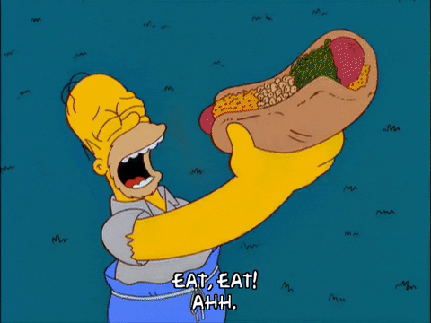

Dessert Dogs inspired by The Simpsons

Ingredients
- Meringue Bun
- 3 large eggs, separated
- ⅛ tsp cream of tartar
- Food coloring (blue, red, and yellow)
- ⅓ cup granulated sugar
- Chocolate Chip Cookie Dough
- 1 stick (8 Tbsp) butter
- ¼ cup sugar
- ¾ cup brown sugar
- 1 large egg
- 1 cup all purpose flour
- ¼ tsp baking soda
- 1 tsp kosher salt
- 6oz bittersweet chocolate
- Batter to Deep Fry Cookie Dough
- 1 cup all purpose flour
- ½ tsp baking soda
- ½ tsp kosher salt
- ¾ cup sugar
- 1 ¼ cup milk
- Cherry “Ketchup”
- 1 cup cherries
- 2-3 Tbsp sugar (depending on how sweet your cherries are)
- 1 Tbsp cornstarch
- Caramel “Mustard”
- ⅓ cup water
- 1 cup sugar
- 2 Tbsp butter
- ¾ cup heavy cream
- Kosher salt
Steps
- Meringue Bun
- Start by separating 3 egg whites into a large bowl and add an ⅛ tsp of cream tartar to the whites
before using a wire whisk to whip the whites into a foam. This will take 1-2 minutes on medium high
speed. I recommend using a stand mixer for this.
- Make sure your pre-measured granulated sugar is free of lumps and prepare your food coloring. To get
a nice light brown, add 3 drops of red and yellow food color while adding 2 drops of blue. Tweak
this to whatever color you desire.
- Slowly add ⅓ cup of sugar while the mixer runs on medium speed. Once all the sugar has been added,
increase the mixer speed to medium-high and beat the egg whites until they have reached stiff peaks.
This is a good time to add any last minute changes to the color. Beat the egg whites for 3-5 minutes
until smooth and glossy and they form stiff peaks.
- To form the meringue into buns, bend cannoli rolls open a little bit so they can stand on their own
and then cover with aluminum foil. Spread the meringue across the molds until it resembles an
inverted hot dog bun.
- Place into a 225℉ oven for 2 ½ hours. Do not open the oven door, even when they are done. They need
to sit in the oven until the whole oven has cooled off completely.
- Once removed from the oven, remove the aluminum foil from the “bun” very carefully, as they are
extremely fragile. Once everything has been removed, set aside until ready to assemble.
- Chocolate Chip Cookie Dough
- Add 1 stick butter, ¼ cup white sugar, ¾ cup brown sugar and 1 large egg into a large mixing bowl
and mix until combined before adding 1 cup all-purpose flour, ¼ tsp baking soda and 1 tsp kosher
salt.
- Add roughly 6oz of finely chopped bittersweet chocolate and mix until combined. Mold the dough into
the shape of hot dogs.
- Cover with plastic wrap and place the “hot dogs” in the freezer for about 1 hour to completely
solidify.
- Cherry Ketchup
- Start off by using a chopstick to pit 1 cup of cherries and put them into a blender. Blend to
extract the juices from the cherries.
- Once the extracting is finished, strain with a strainer or cheesecloth into a small sauce pan. Add
the harvested pits to the strainer since they contain a lot of juice. Press into the sieve until you
have nothing left except for a bunch of cherry pulp.
- Place the pan with the juices onto the stove top with a couple tablespoons of sugar, depending on
how sweet your cherries were to start with. Whisk together, and once everything has cooked and
dissolved, it’s time to thicken.
- Put a few tablespoons of the cherry mixture into a small bowl and add 1 tablespoon or cornstarch.
Whisk together until it forms a slurry. Add the slurry to the sauce pan and simmer for 2-3 minutes
until nice and thick.
- Caramel Mustard
- For the caramel mustard, add ⅓ cup water and 1 cup sugar to a medium saucepan and bring to a simmer
without stirring. All the sugar should dissolve and it should resemble a nice amber color after
about 10 minutes.
- At this point, kill the heat and add ¾ cup of heavy cream while whisking constantly. Keep whisking
until it's nice and smooth. After cooling off for 1-2 minutes, add 2 Tbsp of butter and whisk to
combine. Make sure to season the caramel by adding a generous pinch of salt and mix it all together.
- Batter to Deep Fry Cookie Dough
- In a large mixing bowl, add 1 cup of all-purpose flour, ½ tsp each of baking soda and kosher salt, ¾
cup of sugar and whisk to combine before adding 1 ¼ cup of milk.
- Stir together and until no lumps remain and it resembles a very thin pancake batter. Adjust with
more milk and/or flour as necessary.
- Dessert Dog Assembly
- Retrieve the cookie dough “hot dogs” from the freezer and place them in the batter, covering every
inch of the cookie dough. Place it in a large pot filled with 1 quart of vegetable oil heated to
375℉.
- Let each cookie dough log fry for 2-4 minutes or until golden brown.
- Place the “hot dog” cookie dough log delicately into the meringue bun and drizzle with the cherry
ketchup and caramel mustard.
Credit: Andrew Rea aka Babish from Binging with Babish
YouTube Video
Recipe's Page
Back to my page